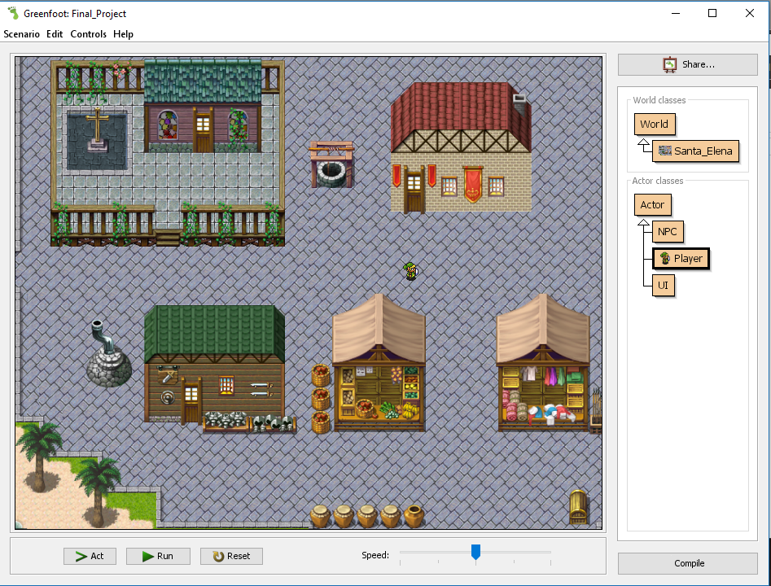

Greenfoot Project
For my CSCI 145 class at USC Beaufort, the final project was to create a video game coded in java that was based on spanish culture. For my project I made a game about Santa Elena, one of the first Spanish settlements in the Beaufort area. The settlement was located on modern day Parris Island. The game is designed to be a role playing game where the player is the leader of the Santa Elena Settlement. For the project I used the Greenfoot IDE to create and run the program and all of it's class files.
How to play:
In the game, you control the movement and decisions of the new Adelantado, governor, of La Florida. Your goal is to earn enough money to keep the Spanish government from abandoning Santa Elena. You should find a balance in relations with the local Native Americans and making a profit for the Spanish Crown. If you grow your treasury to one million reales, the Spanish currency of the time, you will win the game. If your treasury drops down to zero you will get a game over and an order from the Crown to burn down Santa Elena. You will also have a food store that will be depleted faster for each person that moves to Santa Elena, if the food storage reaches zero your settlers will starve and die, and you will get a game over.
Controls & Gameplay:
Movement
Press the direction buttons to move your character UP, DOWN, LEFT, and RIGHT around the map by pressing the
respective arrow key.
Dialogue
To interact with settlers of Santa Elena, walk up close to the settler and press ENTER. This will bring up a
dialogue box displaying what the settler says and options for different responses. To select a response to say
to a settler, use the UP and DOWN arrow keys to highlight your response and press ENTER to say what you have
selected to the settler.
Invest
You can invest money to bring merchants, farmers, etc. from Spain to occupy the empty stores around the
settlement, in turn you will receive taxes from them. To invest in a business, walk up to the sign by the
entrance to the empty shop and press ENTER. A dialogue box will appear with information about the shop,
how much you need to invest, and how much taxes you will receive. Using the arrow keys, you can select the
option to INVEST or CANCEL. If you invest in a business the money will be removed from your treasury. Once
you have invested in a business you can speak with the shop owner to invest more money and receive even more
taxes.
Farmers
You can invest in farmers to come work the lands around the settlement will give you food instead of money.
They are important to prevent your settlers from starving, but are limited in how much food they can produce
because the soil on the island is not suitable for growing crops for large populations, so you must rely on
other means to obtain food.
Merchants
You can interact with merchants to purchase extra food when you have a shortage, or gifts to give to the local
native American tribes. The merchants will be important to keep your settlers from starving, and to improve
relations with the native Americans.
Native American Relations
The soil around Santa Elena cannot support the farming needed to feed everyone you hire. One solution to this is to rely on the nearby native American tribes when you have shortages of food. You can speak with a tribesman who stands by the town hall to make decisions regarding your relationship with the tribe. Through dialogue with the tribesman you can demand a tribute of food from the tribe to keep the settlers from starving. This will have a negative impact on your relationship with the tribe, but save the settlement from doom. You may also pay your merchants for gifts to give to the tribesman, improving your relationship.
If your relationship status is too low, the native Americans will periodically attack the settlement to drive you out, which will cost you money in rebuilding costs. If your relationship is high enough the tribe will gift you with food and goods you can sell back to Spain for profit.